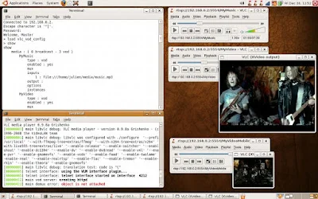

Thus, in this article, I'm going to give you a quick overview on how to configure VLC as an on-demand RTSP streaming server, with on-the-fly transcoding thrown in for good measure ;)
First of all, we need a machine to run the VLC server on. Here, it will be 192.168.0.2, an Ubuntu 8.04 machine with VLC 0.9.8a, ffmpeg SVN-r16245 (built from source) and x264 0.65.1057 (built from source).
Then, we need to copy some media files on the server. I'll use an MP3 file (music.mp3) and an MPEG2 video (video.mpg), both located in /home/julien/media.
Now, let's write the VLC configuration file and save it as vlc_vod_config:
# VLC media player VLM command batch
# http://www.videolan.org/vlc/
new MyMusic vod enabled
setup MyMusic input "file:///home/julien/media/music.mp3"
new MyVideo vod enabled
setup MyVideo input "file:///home/julien/media/video.mpg"
new MyVideoMobile vod enabled
setup MyVideoMobile input "file:///home/julien/media/video.mpg" output "#transcode{venc=ffmpeg,vcodec=h264,vb=384,height=120,width=160,fps=20,aenc=ffmpeg,acodec=mp3,ab=64,channels=1}"
It's fairly self explanatory :) As you can see, we need to create an entry for each media we want to stream:
- the media identifier (MyMusic, MyVideo) following the new keyword is important because it's going to be part of the URL used by the client to access the media.
- vod stands for Video on Demand (VLC can also do broadcast streams)
- enabled, well... you get the idea :)
- setup...input links the identifier to the actual media file we want to stream
Now let's open a terminal on the server and start VLC. We want it to run as an RTSP server on port 5554. We also want to use the telnet interface to configure it and the telnet password will be 'videolan':
ubuntu% vlc -I telnet --telnet-password videolan --rtsp-host 0.0.0.0:5554
output removed
[00000405] telnet interface: telnet interface started on interface 4212
That's it for the server. Now, let's configure it from a client using telnet:
client% telnet 192.168.0.2 4212
Trying 192.168.0.2...
Connected to 192.168.0.2.
Escape character is '^]'.
Password:
Welcome, Master
> load /home/julien/media/vlc_vod_config
Using the show command, we can check the configuration of a stream:
> show MyMusic
show
MyMusic
type : vod
enabled : yes
mux
inputs
1 : file:///home/julien/media/music.mp3
output :
options
instances
This looks good. Let's start a VLC player on the client and connect to a stream:
client% /usr/bin/vlc rtsp://192.168.0.2:5554/MyMusic
VLC media player 0.8.6e Janus
This works :) Thanks to RSTP, you can pause or seek anywhere into the stream. Let's try the video stream now:
client% /usr/bin/vlc rtsp://192.168.0.2:5554/MyVideo
VLC media player 0.8.6e Janus
Same thing: pause, fast forward and rewind all work. In the telnet session, the show command will give you additional info on an active stream:
> show MyVideo
show
MyVideo
type : vod
enabled : yes
mux
inputs
1 : file:///home/julien/media/video.mpg
output :
options
instances
instance
name : 1632621729
state : playing
position : 0.303068
time : 55160000
length : 180556733
rate : 1000
title : 0
chapter : 0
seekable : 1
playlistindex : 1
client% /usr/bin/vlc rtsp://192.168.0.2:5554/MyVideoMobile
VLC media player 0.8.6e Janus
[00000288] main decoder error: no suitable decoder module for fourcc `h264'.
VLC probably does not support this sound or video format.
[00000274] main playlist: stopping playback
Ah #%$£... Now you see why you HAVE to rebuild VLC from source! Let's try again with the latest VLC:
ubuntu% /usr/local/bin/vlc rtsp://192.168.0.2:5554/MyVideoMobile
VLC media player 0.9.8a Grishenko
Ah, now it works. So do pausing and seeking, even with transcoding.
If you run ps or top on the server, you'll notice that an extra VLC process is running to handle transcoding. Also, in the VLC player, under the Tools / Media Information menu, you can look at the Codec Details and Statistics tabs to check that the stream is indeed H264 / MP3 with a low bitrate.

{kind=link}
That's it for today. Have fun with streaming!